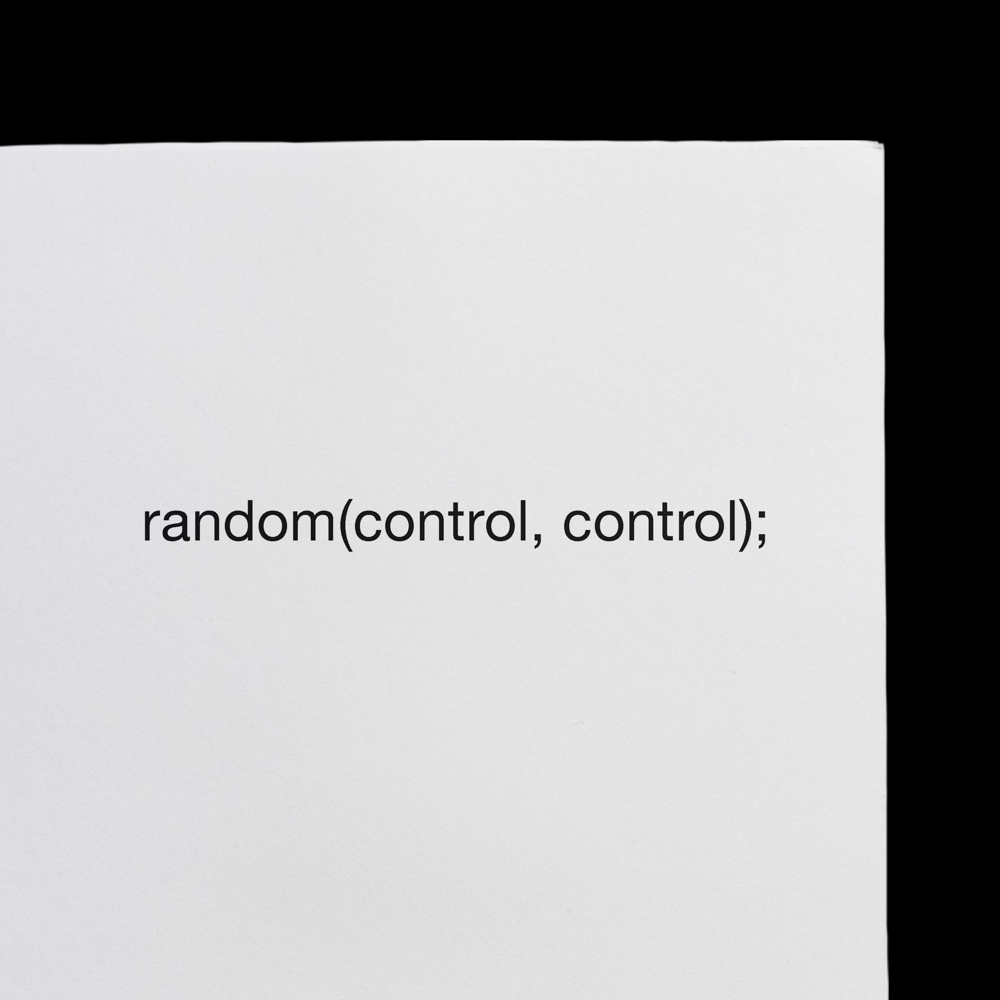
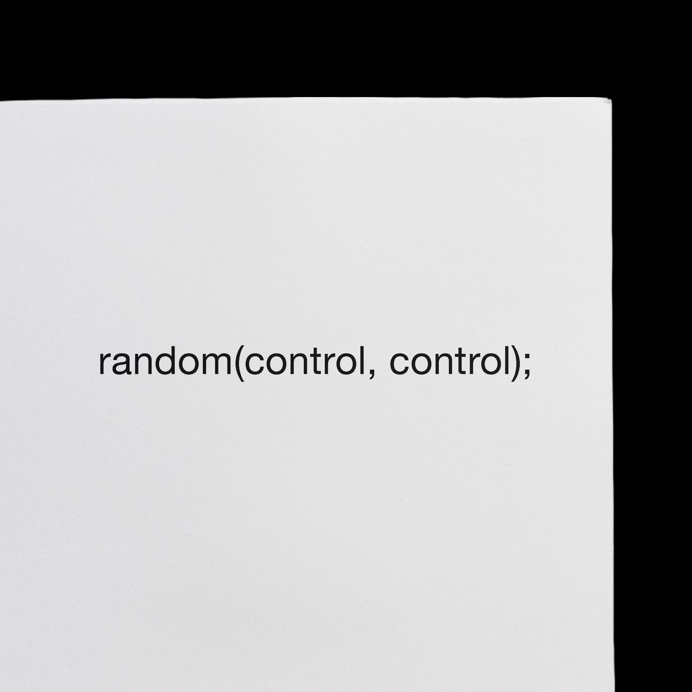

· Print
· Motion Graphics
· Typeface Design
2020
We normally think about out of control results when we hear the word 'random'. However, in programming language, the random function is followed by an interval. The interval actually has full control of the results. To play with the tension between in-control and out-of-control, I explore various mediums to present the idea.


 
